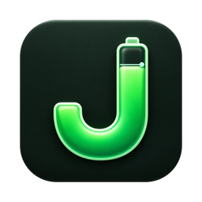
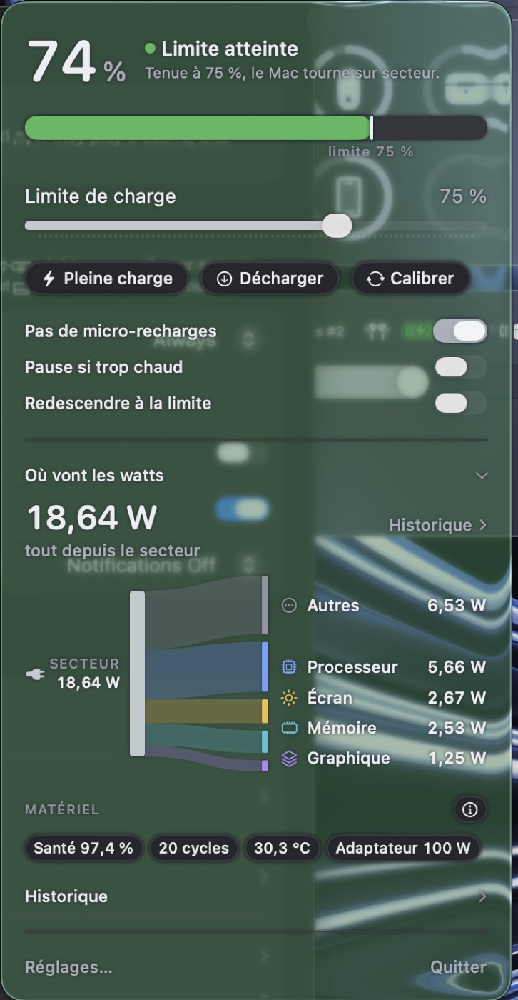
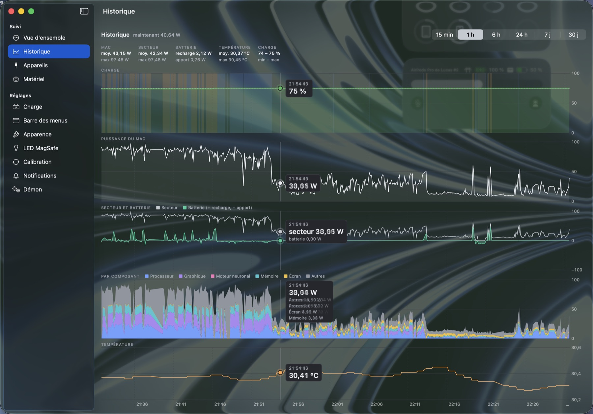
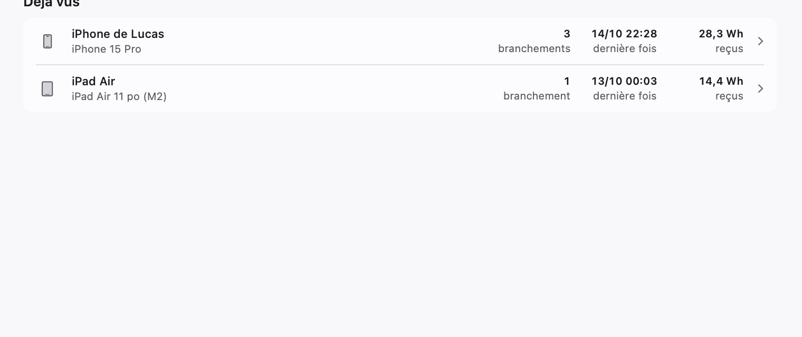

Jauge
La batterie du MacBook, entre deux niveaux.

Un MacBook branché vieillit sa batterie.
Rester à 100 % en permanence l'use plus vite. Jauge coupe la charge à la limite choisie, par exemple 75 %, et le Mac tourne sur le secteur sans solliciter la batterie.
- Une limite, réglable. Un curseur, ou des plages horaires : 100 % avant un voyage, 60 % le reste du temps.
- Pleine charge, décharge, calibrage. Trois boutons dans la barre des menus, quand il le faut.
- Pause si trop chaud. La charge s'arrête au-delà d'une température choisie.
- Le démon travaille seul. La limite tient même quand l'app est fermée.
Où vont les watts.
Processeur, graphique, mémoire, écran : un schéma montre ce que consomme le Mac, depuis le secteur ou la batterie.

Les appareils branchés.
iPhone, iPad : la puissance reçue et le niveau de chaque appareil, sans droits administrateur.

Installer.
Un MacBook à puce Apple, macOS 26 ou plus. Aucun compte, aucun mot de passe administrateur.
curl -fsSL https://raw.githubusercontent.com/LucasHRCHatReply/jauge-releases/main/installer.sh | zsh
Jauge n'est pas notarisée par Apple. Elle est signée, mais la notarisation demande un compte développeur payant : macOS la juge non vérifiée au premier lancement. Le script retire ce blocage sur Jauge.app seulement. Il se lit en entier : installer.sh.
Un geste reste manuel, une fois : Réglages Système › Général › Ouverture et arrière-plan, activer « Jauge ». Quitter AlDente ou toute autre app de limite de charge avant : deux apps qui pilotent la charge se contredisent. Mises à jour ensuite depuis l'app, dans Réglages › Mises à jour.